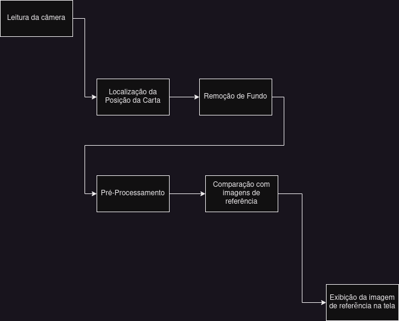

Trabalho de Vídeo T1 - Modelagem Funcional
Grupo
Leonardo Di Credico
Anthony Hlebania
Fernando Hiroaki Suzuki
Fernando Astolfo Dos Santos
Procedimento de Reconhecimento de cartas
O Diagrama abaixo mostra todos os estágios etapas previstas para a identificação de uma carta de magic
na camêra e a exibição de seu scan correspondente na tela.
Os estágios podem ser divididos em 3 subsistemas: Entrada/Saída, Separação da Carta,
Identificação da Carta. Na seção Arquitetura de Subsistemas eles serão explicados com mais detalhes.

Estágios
- Leitura da Câmera: Enviar imagens da camera para o próximo estágio sempre que o usuário clicar na imagem.
- Localização da Posição da Carta: A partir da posição clicada, identificar a região que a carta clicada está.
- Remoção de Fundo: Remover o fundo e toda informação irrelevante da imagem, deixando apenas a carta.
- Pré-Processamento: Aplicar técnicas de processamento de vídeo que facilitem a idenitificação da imagem no próximo estágio.
- Comparação com imagens de referência: Através de uma técnica de comparação ainda a ser definida, a imagem pré processada será comparada
com as imagens de referencia que a aplicação guarda(por sua vez já pré-processadas) e será determinada qual imagem
de referencia é a melhor correspondencia.
- Exibição da melhor correspondência: Localizada a melhor referencia, ela será exibida em um menu lateral
na interface gráfica.
Arquitetura de Subsistemas
Cada subsistema terá um um objetivo e responsabilidade bem-definidos, de forma a manter o código
modular e organizado.
Sendo cada um modelado por pela menos uma classe principal em arquivos separados(IDEIA PRELIMINAR)
Entrada/Saída
Objetivo: Ler imagens da camera e exibir na tela
Responsabilidades:
- Gerenciar conexão com a camera
- Detectar cliques do usuário e a posição deles
- Enviar imagens da camera para o Subsistema Separação da Carta
- Receber imagens do Subsistema Identificação da carta
- Exibir cartas recebidas em uma região separada da interface
Separação da Carta
Objetivo: Isolar a carta alvo do resto da imagem
Responsabilidades:
- Receber a carta do Subsistema Entrada/Saída
Determinar a região da imagem ocupada pela carta
- Remover o fundo da image
Entregar a carta isolada para o Subsistema Identificação da Carta
Identificação da Carta
Objetivo: Ler imagens da camera e exibir na tela
Responsabilidades:
- Receber a imagem da carta do subsistema Separação da Carta
- Aplicar o pré-processamento na imagem recebida
- Armazenar o banco de dados das imagens de referencia
- Sistema de comparação de imagem
Entregar a carta de referencia para o subsistema Entrada/Saída
Etapas do Desenvolvimento
Entrada/Saída
- Etapa 1 ...
- Etapa 2 ...
- Etapa 3 ...
Separação da Carta
- Etapa 1 ...
- Etapa 2 ...
- Etapa 3 ...
Identificação da Carta
- Etapa 1 ...
- Etapa 2 ...
- Etapa 3 ...
Padrão de código
O código sendo o principal produto deste projeto, é de extrema importancia que seja organizado.
Para atingir esse objetivo, definimos os seguintes padrões de código que devem ser seguidos durante
o desenvolvimento:
- A ser definido com o time